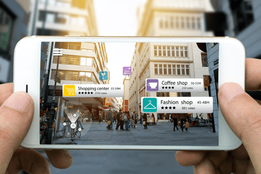
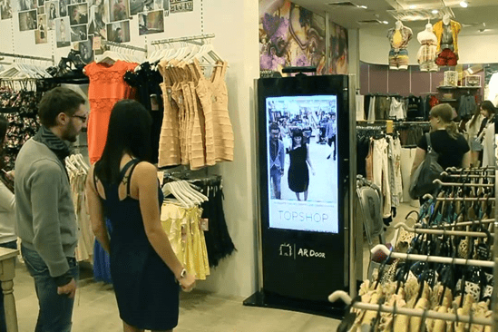
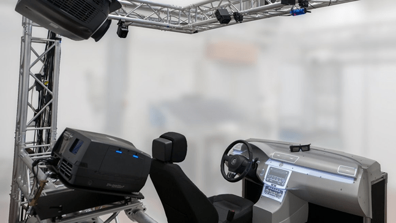
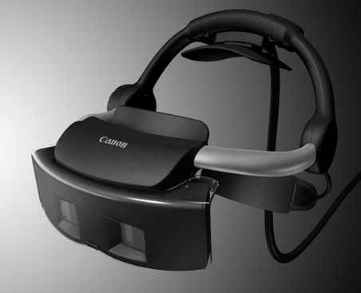
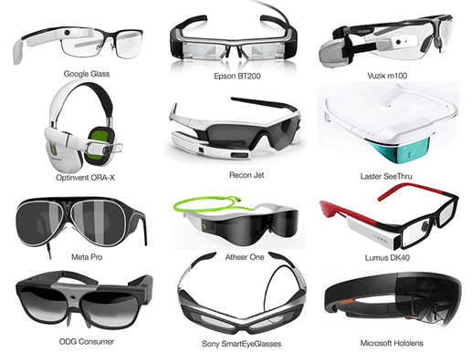
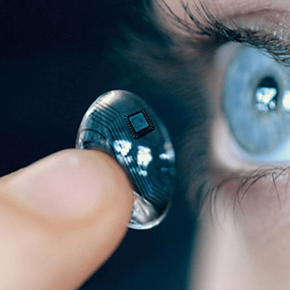

Data publicării: 28.08.2017
Autor articol: Adrian Iftene
Introducere
În această lucrare, vom vedea principalele componente hardware folosite în domeniul realității augmentate și aplicabilitatea acestui domeniu.
Dezvoltarea și implementarea soluțiilor software ce folosesc realitatea augmentată (AR) se bazează pe dezvoltarea de platforme hardware AR adecvate și robuste. Dezvoltarea hardware este condusă de progresul tehnologic în domeniul calculatoarelor: procesoare, ecrane, senzori, viteza de Internet pe mobil, durata de viață a bateriei și multe altele (Glockner et al., 2014).
Privitor la tipurile de platformă AR disponibile în prezent și prin prezicerea a ceea ce urmează, următoarele elemente hardware pentru AR pot fi identificate în prezent (Glockner et al., 2014):
- Sisteme AR de mână (handheld devices);
- Sisteme AR staționare (stationary AR systems);
- Sisteme AR spațiale (Spatial Augmented Reality (SAR) Systems);
- Ecrane montate pe cap (Head-mounted Displays (HMDs));
- Ochelari inteligenți (Smart Glasses);
- Lentile inteligente (Smart Lenses).
Elemente hardware folosite pentru realitatea augmentată
Sisteme AR de mână
În prezent, ne confruntăm cu o explozie de dispozitive portabile, cum ar fi smartphone-uri și tabletele, ceea ce va accelera adoptarea AR. Aceste dispozitive au caracteristici din ce în ce mai bune, cum ar fi ecrane cu rezoluție mai mare, procesoare mai puternice și camere de înaltă calitate, împreună cu o gamă tot mai mare de senzori care oferă capabilități de accelerometru, GPS și compas, făcându-le foarte potrivite pentru platformele de AR. Deși dispozitivele portabile sunt cea mai ușoară cale pentru utilizatori de a accesa aplicațiile AR, majoritatea sunt greu de utilizat, deoarece nu e ușor să oferi utilizatorilor o experiență AR fără a avea disponibile mâinile (Glockner et al., 2014).

Sisteme AR staționare
Sistemele AR staționare sunt potrivite atunci când este necesar un afișaj mai mare sau o rezoluție mai mare într-o locație stabilită dinainte. Spre deosebire de dispozitivele mobile AR, aceste sisteme fixe pot fi echipate cu sisteme de camere mai avansate și, prin urmare, pot oferi o recunoaștere mai precisă a persoanelor și scenelor. Mai mult decât atât, ecranul de afișare prezintă adesea imagini mai realiste și nu este atât de afectat de influențele mediului cum ar fi lumina soarelui sau lumina slabă.

Sisteme AR spațiale (SAR)
Spre deosebire de toate celelalte sisteme, sistemele SAR includ un conținut virtual proiectat direct pe imaginea din lumea reală (Glockner et al., 2014). SAR-urile sunt adesea staționare. Orice suprafață fizică, cum ar fi pereți, birouri, spumă, blocuri de lemn sau chiar corpul uman, poate fi transformată într-un afișaj interactiv. Cu proiectoare din ce în ce mai mici, mai ieftine și cu un consum din ce în ce mai mic de energie, și cu progresul accelerat din proiecția 3D, avem disponibile noi modalități de interacțiune și noi posibilități de afișare. Cel mai mare avantaj al sistemelor SAR este acela că acestea oferă o reflectare mai precisă a realității, deoarece informațiile virtuale pot fi vizualizate la o scara și cu dimensiuni reale. În plus, conținutul poate fi vizibil pentru un număr mai mare de spectatori, iar acest lucru poate, de exemplu, să permită lucrul simultan.

Ecrane montate pe cap (HMDs)
Dispozitivele montate pe cap (HMD) reprezintă un alt element hardware AR cu o adoptare rapidă. HMD constă dintr-un set cu cască pentru cap, cum ar fi o cască, care este asociată cu unul sau mai multe (micro) ecrane. HMD-urile combină imagini din lumea fizică, cu obiecte virtuale pe care le afișează utilizatorului. Cu alte cuvinte, utilizatorul nu vede realitatea direct, dar vede o imagine video (augmentată) a acesteia. Dacă afișajul este plasat numai în fața unuia dintre ochii utilizatorului, se numește HMD monocular (spre deosebire de sistemele binoculare, unde ambii ochi vizualizează afișajul). HMD-urile moderne sunt adesea capabile să utilizeze senzori pentru șase grade de libertate, permițând utilizatorului să-și miște capul în mod liber:
- înainte / înapoi,
- în sus / în jos,
- în stânga / în dreapta,
- înclinare,
- răsturnare și
- rotire.
Acest lucru permite sistemului să alinieze informațiile virtuale la lumea fizică și să se adapteze în funcție de mișcările capului utilizatorului.

Ochelari inteligenți
Multe companii din industria electronică de consum așteaptă ca ochelarii inteligenți să fie următorul mare produs de consum global după telefoanele inteligente. Aceste dispozitive AR sunt în esență ochelari echipați cu ecrane, camere și microfoane. Cu acest concept, vizualizarea din lumea reală a utilizatorului este interceptată și o vizualizare augmentată este re-afișată în domeniul vizual al utilizatorului. Imagistica AR este proiectată prin sau reflectată de pe suprafața pieselor de lentile pentru ochelari. Cele mai proeminente exemple ale acestei tehnologii sunt Google Glass și Vuzix M100. Totuși, una dintre cele mai interesante dezvoltări ale ochelarilor inteligenți este varianta Atheer One – echipată cu senzori 3D de adâncime, permițând utilizatorilor să controleze fizic conținutul virtual afișat în fața lor.

Lentile inteligente
Ochelarii nu sunt cu siguranță la sfârșitul poveștii. Cercetarea se axează mai mult în ultimul timp pe lentilele inteligente care pot afișa imagini AR. Companii mari precum Microsoft și Google sunt implicate în prezent în proiecte ce folosesc lentile inteligente. Ideea este de a transforma lentilele obișnuite într-un sistem funcțional prin integrarea circuitelor de comandă, a circuitelor de comunicații, a antenelor miniaturale, a LED-urilor și a altor componente optoelectronice. În viitor, sute de LED-uri integrate ar putea fi folosite pentru a forma o imagine direct în fața ochiului, transformând obiectivul într-un afișaj augmentat. Cu toate acestea, înainte ca acestea să devină realitate, trebuie depășite câteva provocări semnificative, cum ar fi modul de alimentare al lentilelor și cum să se asigure că ochiul uman nu este deteriorat.

Concluzii
După cum am putut vedea în acest articol, dispozitivele hardware folosite în AR sunt din ce în ce mai diverse și mai adaptate la nevoia utilizatorului final de a avea acces la imagini sugestive din aplicațiile pe care le folosește. Pe lângă dispozitivele clasice (telefoane inteligente, tablete, ecrane ale calculatoarelor), există dispozitivele mari industriale, care de regulă sunt fixe, iar în ultimii ani au început să apară dispozitive din ce în ce mai mici (HMDs, ochelari, lentile).
Momentan prețurile acestora sunt destul de mari ca să și le poată permite oricine, dar se prevede ca în anii ce urmează, prețurile lor să scadă, iar în viitor optimiștii prevăd că vor fi folosite pe scară largă, precum telefoanele inteligente în prezent.
Referințe bibliografice
- Glockner, H., Jannek, K., Mahn, J., Theis, B., “Augmented reality in logistics. Changing the way we see logistics – a DHL perspective”. Publisher: DHL Customer Solutions & Innovation, 2014.